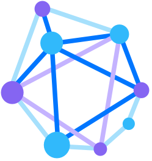
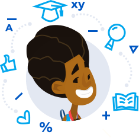
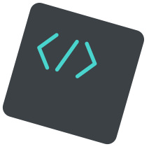
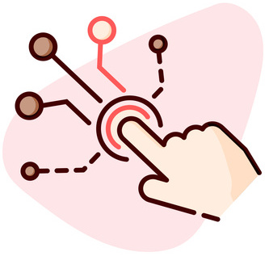

Gautam Yadav
Current Edtech Student at CMU in School of Computer Science graduating on August 2020.
Current Edtech Student at CMU in School of Computer Science graduating on August 2020.






I redesigned the existing CTAT interface using findings from usability testing of low fidelity wireframes. The tutors developed by this tool is used by 0.5 million students per year.
I am developing API for behavior graph based on the redesign which captures main solution paths and erroneous steps, enables author to move around in solution space, and support editing state of example-tracing engine in JavaScript
Intelligent Tutoring Systems UI/UX Design Web Application Full Stack Development
I used CTA to design 3 high-fidelity prototypes of intelligent tutors that will help in conceptual and procedural algebra learning.
Then based on learner testing with middle school students, I developed an Intelligent Tutoring System in JavaScript which asks students for diagrammatic self-explanation of future steps by selecting a tape diagram before each step.
Intelligent Tutoring Systems Cognitive Task Analysis UI/UX Design Web Application Full Stack Development Cognitive Tutor Authoring ToolsI designed 10 hours of backward designed assessments & instructional activities aligning with educational goals and learning objectives.
Align Goals, Instructions, and Assessment Instructional Design Curriculum EvaluationI also designed an online intervention for students scoring low in debugging quiz in the above Scratch Curriculum to study, which increased the overall score by 24% for all and 47% for novices from pre test to post test based on 20 student learner testing.
Align Goals, Instructions, and Assessment Cognitive Task Analysis A/B Testing Instructional DesignI designed an online tutor for teaching insertion in AVL trees built-in JavaScript, and Cognitive Tutor Authoring Tools as a passion project.
It was accepted for publication in ACM COMPUTE 2019 as the first author
Intelligent Tutoring Systems UI/UX Design Web Application Full Stack Development Cognitive Tutor Authoring Tools
Leading a team of 5 people, we created an online Intelligent Tutoring System in Django to identify students’ level of understanding and built a 3 layered Neural Network in Python to adjust content to students’ knowledge level
We utilized user-user collaborative filtering to recommend courses and collaborative filtering using Restricted Boltzmann Machines to recommend career paths for students with Python
Intelligent Tutoring Systems Team Lead Web Application Back-end Development Machine Learning
A showcase of some other products I worked on and shipped (pre-CMU) in my old portfolio.
Thanks for stopping by. How about some more facts about me?